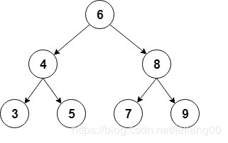

现在很多公司在招聘开发岗位的时候，都会事先在招聘信息中注明面试者应当具备的知识技能，而且在面试的过程中，有部分对于技能掌握程度有严格要求的公司还会要求面试者手写代码，这个环节很考验面试者的基础功底和实力！
这不，前些天一个朋友去阿里面试的时候，在二面过程中就被要求使用Java实现二叉树，王二Dog由于没有准备这方面的知识，没有答上来，然后就让回家等通知了。
所以有利用给王二Dog讲解二叉树的机会，我整体梳理了下二叉树常见的面试点，发出来供大家一起交流学习。希望对你的面试有所帮助。
二叉树是递归数据结构，其中每个节点最多可以有2个子节点。
常见类型的二叉树是二叉搜索树，其中每个节点的值大于或等于左子节点值，并且小于或等于右子节点中的节点值。
这是这种二叉树的直观表示：

对于实现，我们将使用 Node 类来存储 int 值并保存对每个子节点的引用：
class Node {
int value;//本节点的值
Node left;//左边的子节点
Node right;//右边的子节点
Node(int value) {
this.value = value;
right = null;
left = null;
}
}然后，让我们添加树的根节点，通常称为 根：
public class BinaryTree {
Node root;
// ...
}正是金九银十跳槽季，为大家收集了2019年最新的面试资料，有文档、有攻略、有视频。有需要的同学可以来在公众号【Java知己】，发送【面试】领取最新资料！
现在，让我们看看可以在二叉树上执行的最常见操作有哪些？
我们要介绍的第一个操作是插入新节点。
首先，我们必须找到我们想要添加新节点的位置，以便对树进行排序。我们将从根节点开始遵循这些规则：
首先，我们将创建一个递归方法来进行插入：
private Node addRecursive(Node current, int value) {
if (current == null) {
return new Node(value);
}
if (value < current.value) {
current.left = addRecursive(current.left, value);
} else if (value > current.value) {
current.right = addRecursive(current.right, value);
} else {
// value already exists
return current;
}
return current;
}接下来，我们将创建一个递归方法来创建根节点：
public void add(int value) {
root = addRecursive(root, value);
}现在让我们看看如何使用此方法从我们的示例中创建树：
private BinaryTree createBinaryTree() {
BinaryTree bt = new BinaryTree();
bt.add(6);
bt.add(4);
bt.add(8);
bt.add(3);
bt.add(5);
bt.add(7);
bt.add(9);
return bt;
}现在让我们添加一个方法来检查树是否包含特定值。
和以前一样，我们首先创建一个遍历树的递归方法：
private boolean containsNodeRecursive(Node current, int value) {
if (current == null) {
return false;
}
if (value == current.value) {
return true;
}
return value < current.value
? containsNodeRecursive(current.left, value)
: containsNodeRecursive(current.right, value);
}在这里，我们通过将其与当前节点中的值进行比较来搜索该值，然后根据该值继续在左或右子节点中继续查找。
接下来，我们让创建一个公共方法来查找：
public boolean containsNode(int value) {
return containsNodeRecursive(root, value);
}现在，让我们创建一个简单的测试来验证树真的包含插入的元素：
@Test
public void givenABinaryTree_WhenAddingElements_ThenTreeContainsThoseElements() {
BinaryTree bt = createBinaryTree();
assertTrue(bt.containsNode(6));
assertTrue(bt.containsNode(4));
assertFalse(bt.containsNode(1));
}另一种常见操作是从树中删除节点。
首先，我们必须以与之前类似的方式找到要删除的节点：
private Node deleteRecursive(Node current, int value) {
if (current == null) {
return null;
}
if (value == current.value) {
// Node to delete found
// ... code to delete the node will go here
}
if (value < current.value) {
current.left = deleteRecursive(current.left, value);
return current;
}
current.right = deleteRecursive(current.right, value);
return current;
}一旦我们找到要删除的节点，就有3种主要的不同情况：
让我们看看当节点是叶节点时我们如何实现第一种情况：
if (current.left == null && current.right == null) {
return null;
}现在让我们继续讨论节点有一个子节点的情况：
if (current.right == null) {
return current.left;
}
if (current.left == null) {
return current.right;
}在这里，我们返回 非null 子节点，以便将其分配给父节点。
最后，我们必须处理节点有两个子节点的情况。
首先，我们需要找到将替换已删除节点的节点。我们将使用节点的最小节点删除右侧子树：
private int findSmallestValue(Node root) {
return root.left == null ? root.value : findSmallestValue(root.left);
}然后，我们将最小值分配给要删除的节点，之后，我们将从右侧子树中删除它：
int smallestValue = findSmallestValue(current.right);
current.value = smallestValue;
current.right = deleteRecursive(current.right, smallestValue);
return current;最后，我们让创建删除的公共方法：
public void delete(int value) {
root = deleteRecursive(root, value);
}现在，让我们检查删除是否按预期工作：
@Test
public void givenABinaryTree() {
BinaryTree bt = createBinaryTree();
assertTrue(bt.containsNode(9));
bt.delete(9);
assertFalse(bt.containsNode(9));
}在此，我们将看到遍历树的不同方式，详细介绍深度优先和广度优先搜索。
我们将使用之前使用的相同树，并且我们将显示每个案例的遍历顺序。
深度优先搜索是一种在每个子节点探索下一个兄弟之前尽可能深入的遍历。
有几种方法可以执行深度优先搜索：in-order, pre-order 和 post-order。
in-order：首先访问左子树，然后访问根节点，最后访问右子树：
public void traverseInOrder(Node node) {
if (node != null) {
traverseInOrder(node.left);
System.out.print(" " + node.value);
traverseInOrder(node.right);
}
}如果我们调用此方法，控制台输出：
3 4 5 6 7 8 9pre-order：首先访问根节点，然后是左子树，最后是右子树：
public void traversePreOrder(Node node) {
if (node != null) {
System.out.print(" " + node.value);
traversePreOrder(node.left);
traversePreOrder(node.right);
}
}如果我们调用此方法，控制台输出：
6 4 3 5 8 7 9post-order：访问左子树，右子树，最后访问根节点：
public void traversePostOrder(Node node) {
if (node != null) {
traversePostOrder(node.left);
traversePostOrder(node.right);
System.out.print(" " + node.value);
}
}如果我们调用此方法，控制台输出：
3 5 4 7 9 8 6这是另一种常见的遍历类型，它在展示进入下一级别之前访问级别的所有节点。
这种遍历也称为按级别顺序，并从根开始，从左到右访问树的所有级别。
对于实现，将我们使用 队列 按顺序保存每个级别的节点。我们将从列表中提取每个节点，打印其值，然后将其子节点添加到队列中：
public void traverseLevelOrder() {
if (root == null) {
return;
}
Queue<Node> nodes = new LinkedList<>();
nodes.add(root);
while (!nodes.isEmpty()) {
Node node = nodes.remove();
System.out.print(" " + node.value);
if (node.left != null) {
nodes.add(node.left);
}
if (node.right!= null) {
nodes.add(node.right);
}
}
}在这种情况下，节点的顺序将是：
6 4 8 3 5 7 9在本文中，我们已经了解了如何在Java中实现已排序的二叉树及其最常见的操作。你是否从中有所收获呢？哪怕你能收获一点点心得，小编在此也欣慰了！
“不积跬步，无以至千里”，希望未来的你能成为：有梦为马 随处可栖！加油，少年！
正是金九银十跳槽季，为大家收集了2019年最新的面试资料，有文档、有攻略、有视频。有需要的同学可以来在公众号【Java知己】，发送【面试】领取最新面试资料攻略！